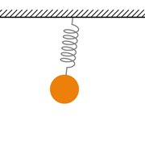
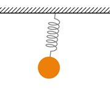

Mathematical foundations, Bézier curves. Interface and document structure: similarities and differences with Adobe Photoshop, distinctions in the Layers panel, Isolation mode. Making and editing splines: Pen tool and its controls, adding spline points, Anchor Point tool, joining splines. Compound paths: Pathfinder panel, Shape Builder tool, Clipping Masks. Appearance panel, dashing and arrowheads, Expand Appearance, selecting objects by properties and types. Text layers, text block threading, typing along splines, convertion to outlines.
Embeding external files, combining vector and raster images, linking between Illustrator and Photoshop, tracing raster images. Importing LaTeX documents, dealing with font issues (font sources from CTAN, selectively replacing missing fonts, Flatten Transparency), generating equations in-place with LaTeX2AI. Vector image formats, exporting as raster image.
Interface: Viewport navigation and basic tools, Outliner, Details, and Content Drawer panels. Setup for low-end PC. Adding basic shapes and assembling a scene: left-handed coordinate system!, object parenting. Keyframe animation, Sequencer panel, Movie Render Queue plugin, render settings for high-quality video. Actors, programming with Blueprints, real-time physics simulations. Importing keyframe animations, table data, and 3D meshes from Wolfram Mathematica. Importing LaTeX expressions via Adobe Illustrator, Widgets, 2D and 3D rendering of text and imported formuli. Trajectory visualisation with Niagara. Basic materials, Material Blueprints, and Material Instances. Lighting and camera settings, Post Process Volume, HDRI.
Reducing problems to functions, arbitrary function construction, the Universal Approximation Theorem. Forward pass and backpropagation in a classification neural network. Training: loss function, gradient descent, stochastic gradient descent. Interpretability, convolutional neural networks (CNN). Neural networks for image and video restoration: training data, existing implementations. Image generation: reverse classifiers and generative adversarial networks (GAN), mode collapse. Autoencoders: training data, compression, latent space and generalized coordinates, variational autoencoders (VAE).
Diffusion models: multidimentional image space and target distribution, forward process and Schedule types, reverse process and Sampling methods (ODE solvers), differential equation, step size (Sampling steps). Unguided vs guided generation, image-text cross attention, classifier-free guidance (CFG) scale, Control Net.
Latent diffusion, Stable Diffusion (SD) 1.5, interfaces (Automatic1111, ComfyUI, InvokeAI, Fooocus, Google Colab).
Image to image (img2img) generation, inpainting, diffusion models for image resotration.
Foundational design principles: repetition and contrast in position (proximity), alignment, and size. Optical compensation.
Fonts: serif vs sans-serif, typographical point. Repetition and contrast in font families, size, and weight. Font libraries, file formats.
Color schemes: proximity and contrast in analagous, complimentary, and tetrad palettes. Color libraries.
Microsoft PowerPoint: Selection Pane, importing vector images and LaTeX equations, extracting files from presentations.
Interactive elements, dynamic references, animation and transitions, layer naming for Morph. Baking presentations, exporting to video.
Constructing RGB color space from the ground up. Curvilinear color coordinates: HSL, HSV, and LAB. Differences between Hue, Shade, Tone, and Tint. Conversion of images to grayscale and CMYK. Color (bit) depth, HDRI.
Blending modes in Adobe Photoshop and Wolfram Mathematica, multiply as a substitute for masking.
Hue/Saturation adjustment and selective color editing.
Colorizing grayscale images, working with channels, gradient maps in Wolfram Mathematica, Adobe Photoshop, and After Effects.
Color decomposition for retouching.
Image convolution, linear and box kernels, separation of variables. Motion (directional) blur, camera blur, Gaussian blur. Drop shadows and glow. Spatial frequencies, wavelet decomposition. Sharpening filters: Sharpen, High Pass, Unsharp Mask. Edge detection.
Image deconvolution and denoising, loss-of-information obstacles (out-of-bounds blur, noise infinite frequency).
Random number generation (LCG and Mersenne Twister from the ground up, relation to logistic map and Lorenz attractor), random seed. Gaussian and fractal noise, implementation in Adobe Photoshop and After Effects.
Reaction–diffusion.
Mathematical foundations: ray tracing vs projection (rasterization) rendering. Ray tracing variations: path tracing, ray marching, cone marching. Physics-based rendering (PBR) materials: the rendering equation, Biderectional Scattering Distrubution Function (BSDF), metallic-roughness model. Specular reflections: Fresnel coefficients, Schlick's approximation, highlight models. Geometry and normals: Phong shading, normal maps. Global illumination and ambient occlusion, implementation with Fibonacci lattice. Anti-aliasing, motion blur, and depth-of-field blur with combined supersampling technique.
Shaders: real-time GPU simulations and rendering, integration into HTML with <canvas>, Unreal Engine material blueprints.
Native 3D functionality in Wolfram Mathematica: materials and lighting, generating and exporting 3D meshes.
File formats and export: Raster images (PNG, PSD, WebP, Jpg, BMP), Vector images (PDF, Ai, SVG), Video and animation (GIF, WebP, MPEG4 + H.264, WebM), Vector animation (SVG, HTML + CSS).
Importing vector formats (Microsoft PowerPoint and Word, HTML, Unreal Engine, Adobe After Effects and Photoshop, Wolfram Mathematica), importing PDF to Adobe Illustrator, fixing font issues.
Special export from Wolfram Mathematica: frame sequenses (PNG), animations (to CSV and CSS), 3D meshes (Obj).
Assembling animations from frame sequences (Adobe Photoshop, Krita, Photopea, ffmpeg), converting video to frame animation.
Importing animation CSV tables (After Effects, Unreal Engine).
Extracting images and 3D models from Microsoft PowerPoint and Word.
Rendering LaTeX expressions (Wolfram Mathematica, Adobe Illustrator scripts and plugins, Microsoft PowerPoint and Word, HTML, pdflatex + Ghostscript), importing rendered expressions (Microsoft PowerPoint and Word, Unreal Engine, Adobe Illustrator).
Converting Wolfram Mathematica expressions to and from LaTeX source code. Optical Character Recognition (OCR) to LaTeX source code.
 
